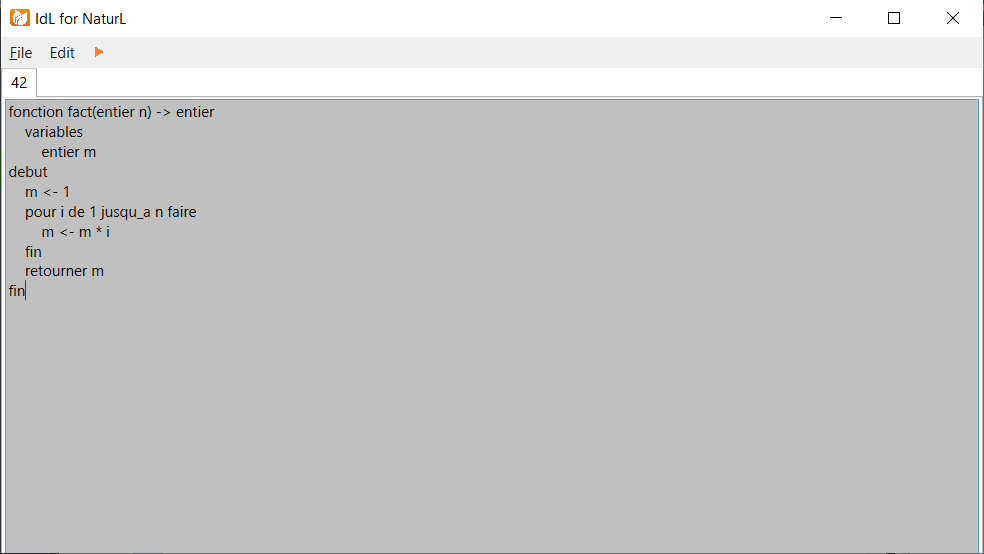
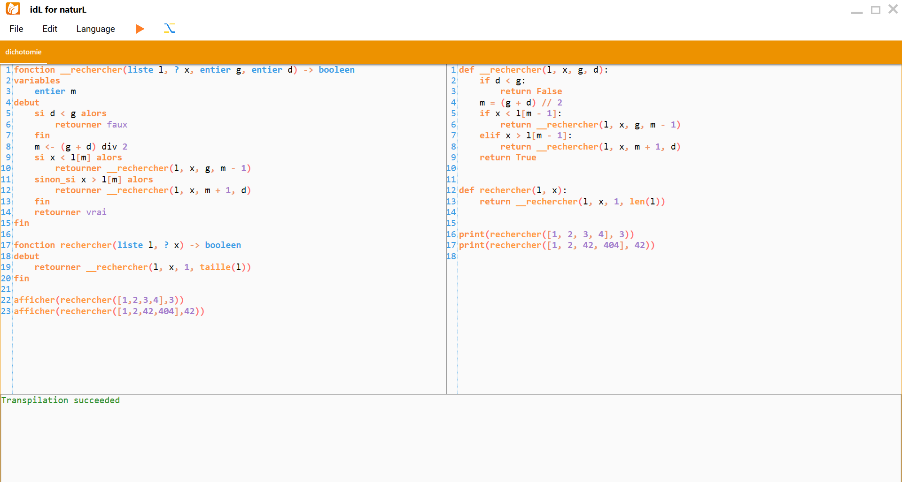

The NaturL Foundation
The NaturL Foundation official website
Décembre 2019 - Janvier 2020: Naissance de naturL et de idL.
Février 2020: Première version de naturL/idL: transpilation de fonctions basiques, éditeur de texte basique capable d'ouvrir, sauvegarder, créer et transpiler des fichiers .ntl.
Avril 2020: Deuxième version de naturL/idL: transpilation de fonctions plus complexes manipulant des listes, système d'imports, simplification d'expressions, internationalisation, editeur développé, nouveau design, capable d'afficher des messages d'erreurs, de transpiler et d'interpreter le code transpilé.
Mai 2020: Troisième version de naturL/idL: librairie standard disponible en naturL, système de types abstraits, éditeur de texte très développé, autocomplétion intelligente, belle interaction avec les erreurs et les avertissements
 